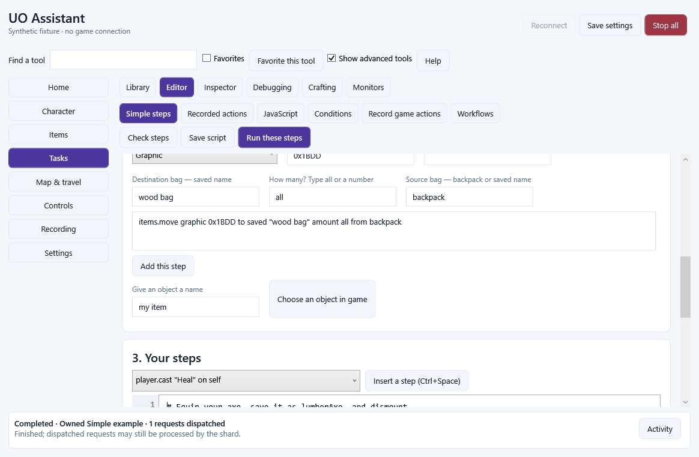
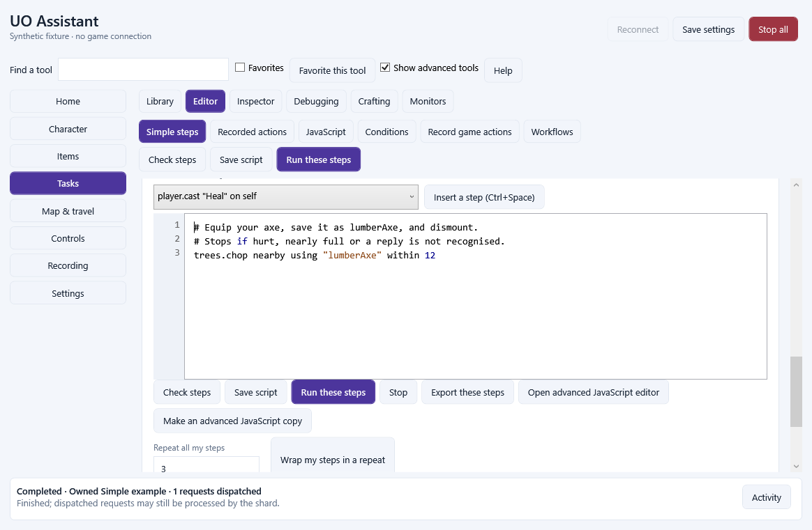

Eight categories, with tabs for related tools
Choose a category on the left, then a tab across the top. A second row appears when a tab has related tools. Save and Run buttons stay above the scrolling page, and Stop all is always at the top of the window.
Home: Overview, activity and journal, timers.
Character: Health and pets, targets and saved objects, equipment, combat and cooldowns.
Items: Bags and search, loot, moving and restocking, vendors and use-once items.
Tasks: Your task library, Simple steps, JavaScript, recorded actions, workflows, crafting, monitors and debugging.
Map & travel: Map and markers, walking and waypoints, runebooks, team map and recovery.
Controls: Hotkeys, keyboard and mouse bindings, action bars, display and sound.
Recording: Video capture, replay and recording settings. Action recording for macros is under Tasks.
Settings: Profiles, play styles, appearance, backups and diagnostics.
Find a tool accepts familiar words such as bandage, trees, bags and hotkey. Favorites retain your saved tools. Show advanced tools reveals specialist editors, inspectors and diagnostics. Opening an advanced tool from a direct link reveals it automatically. All previous features remain available.
Getting started with the new layout
Start with Simple Scripts
Open Tasks / Editor / Simple steps, or choose Create a Simple Script on Home / Overview. Pick a starter recipe, then Use this recipe. Read the steps. Check steps checks the whole script without running anything. Run these steps runs the current editor, even before you save it. Stop ends the active run.
The Add a step menus write commands for you. Choose an action, fill in the names or numbers, inspect the preview, then Add this step. Steps are appended in order. You can edit the text, use Ctrl+Space to insert a command example, or wrap all your steps in a finite repeat.
Save script keeps your work in the character library. Export these steps creates a .uosimple file. Import .uosimple or .js files on Script tools. Existing JavaScript scripts remain JavaScript. Make an advanced JavaScript copy saves the translated code and helper functions as a separate script; your Simple source stays intact.
player.cast "flamestrike" on last
wait 1 second
player.cast "heal" on self
Give objects useful names
In Simple Scripts, enter a name under Give an object a name and choose Choose an object in game. Click the axe, bag, bandages or other object in the game. Use saved "my axe" or saved "wood bag" to refer to that exact object. A name already attached to a different object is not silently replaced; edit it on Targeting or choose another name.
A quoted item name searches the exact loaded item name and ignores capitals. It does not use a saved-object name unless you write saved. A graphic selects an artwork number; hue, colour or color narrows its colour. A serial identifies an exact object. Missing names, duplicate matches and unopened bags produce an explanation instead of an arbitrary selection.
Spell and skill names come from the connected client. Spaces, capitals, hyphens and underscores are ignored, so Flame Strike and flamestrike match. Unknown or ambiguous names stop the script. Shard-specific additions must appear in that client catalogue.
items.use saved "bandages" on self
items.use graphic 0x0F49 hue 7
items.equip saved "my cloak" layer "cloak"
Targets and waiting
Use on self, on last or on saved "name" after a spell or item use. The script waits for the fresh target cursor automatically. You can also put target.self, target.last or target saved "name" on a separate line. A five-second target timeout stops the script; it does not cast or use the item repeatedly.
A target from a scanned map tile uses its coordinates and original graphic. The exact tile is checked again before targeting. A manual action, changed cursor, changed character or stopped run invalidates the old authority. Game actions remain subject to the shard and current loaded state.
player.cast "Greater Heal"
target.self
Put items into containers
Open the source and destination bags first. Save a memorable name for the destination. Searches cover the direct contents of the chosen open bag, not nested bags. The default source is your backpack. Matching ordinary stacks can be moved; containers themselves are not moved by this command.
amount all moves every matching stack that was found in the direct source. A number means a total amount across stacks. An insufficient total is refused before moving anything. Every requested move must be observed in the inventory before the next move. A changed item, protected item or unconfirmed move stops the script and asks you to check the bags.
There is no automatic banking, opening of nested bags or dropping on the ground. Use a smaller or more specific selection when the loaded inventory is incomplete.
items.move graphic 0x1BDD to saved "wood bag" amount all from backpack
items.move graphic 0x0E21 to saved "supplies" amount 10 from backpack
Scan trees, caves, items and windows
scan.trees, scan.caves and scan.tiles collect every bounded page around your starting point. Results are nearest first. The default radius is 12 tiles, maximum 18. Unloaded cells, truncated pages or a broken cursor stop the scan. Custom artwork may require scan.tiles graphic instead of tree/cave classification.
Use as to give the result list a name, then show to inspect up to twelve results in script output. Found item rows include name, graphic, object and amount; tile rows include coordinates. Window rows include visible text and available button details. Larger lists are explicitly shortened for display; loops still use the whole bounded list.
General gump scanning is read-only and searches visible window text by substring, or graphics. Editable fields are excluded. Replies to server windows use a separate gumps.wait followed by gumps.press. An inspection result does not itself authorize a reply.
scan.trees within 12 as trees
show trees
scan.caves within 8 as caves
show caves
items.find graphic 0x1BDD in backpack as logs
show logs
gumps.find "craft" as windows
show windows
Walk and visit results
walk.to and run.to accept X and Y with optional z height, or a tile from a scan. Omitted height uses the current player height. within is the stopping distance from zero to three tiles (default one). timeout defaults to ten seconds, maximum thirty. Movement is limited to nearby loaded locations within 32 tiles per move.
The script waits until arrival is observed. An unreachable destination stops pathfinding and the script. A scan can identify a tree that cannot be reached; finding a tile is not proof it is walkable or harvestable.
scan.trees within 8 as trees
for each tree in trees
walk.to tree within 2
end
Chop nearby trees on Invicta
Use the Chop nearby trees - Invicta starter recipe. Equip your axe, save it as lumberAxe using Choose an object, and dismount. The recipe selects a 30-minute maximum run. The gathering builder also selects that limit when adding its step. Start within the loaded forest area you want to harvest.
The one command scans a fixed radius of up to twelve tiles, walks between tree positions, and uses the equipped axe until the server says that position has no wood left. It stops for damage, low health, weight reserve, a changed or broken tool, manual actions, unknown journal replies or finite run/operation limits.
Unreachable, blocked and repeatedly failing trees are counted as skipped, never as depleted. The final output distinguishes an area finished from a pass with skips. Logs stay in your backpack. If the run stops for weight, unload them and run again. This recipe recognises Invicta messages; other shards may need an advanced-script adaptation. Automated synthetic checks do not replace a live shard test.
trees.chop nearby using "lumberAxe" within 12
Repeat and make decisions
repeat runs from one to one hundred times. for each visits the items or tiles returned by an earlier find or scan. end closes each repeat, for each or if block. else is optional. Indentation helps readability. At most eight blocks may be nested.
Conditions support player.health, player.mana, player.stamina and player.weight, with below, above or equals and an optional percent. A percentage needs a known positive maximum. Other conditions are items.have, journal.contains, player.dead and player.mounted.
break finishes the current loop; continue skips its current iteration; stop finishes the whole script. Run-time and engine-operation budgets apply in addition to finite loops. Choose 1, 5 or 30 minutes in the beginner editor. Imported custom run limits are retained until you change the choice.
repeat 3 times
if player.health below 50 percent
player.cast "Heal" on self
else
player.skill "Hiding"
end
wait 10 seconds
end
Windows and journal messages
gumps.wait accepts text or a server serial, and waits for exactly one complete matching server window. gumps.press takes a button number or the exact button label if the client supplies one. Missing or ambiguous labels require a number from the inspector. The window must remain unchanged after the wait. Menus use menus.wait and menus.choose.
prompt.reply and entry.reply wait for their corresponding text dialog before replying. General window search cannot click arbitrary local client windows. Page changes, multiple matches and changing server windows may require a fresh wait.
journal.clear marks the current sequence without erasing the game journal. journal.wait and journal.contains use new system messages after the script starts or that marker. Chat from other players does not satisfy these tests. log and its say alias write to assistant output, not game chat.
gumps.wait "craft" timeout 5 seconds
gumps.press button 1
journal.clear
items.use saved "my item"
journal.wait "You put some" timeout 10 seconds
When something does not work
Check steps validates the entire source before any game action. Runtime errors identify the original Simple Script line. A valid script still needs the correct shard, loaded objects, connected character and available spell/skill catalogue. Use Choose an object when item names are missing or several objects match.
An action being requested does not prove that the shard accepted its effect. Casting is followed by a cursor wait when targeting is requested. Movement waits for observed arrival; item transfers wait for observed changes. Journal-driven recipes stop when their expected replies do not arrive.
Simple Script is an additional language, not a replacement for JavaScript. All 48 advanced assistant API methods, legacy import, hotkeys, observers and debugging remain available. Source-line debugging and the offline bench are for JavaScript; the beginner editor offers validation and the shared action trace. Existing JavaScript source is not automatically rewritten.
Player commands
Cast a spell
player.cast "Heal" on self
Choose a spell name. Use on self, on last or on saved "name". Targeting waits automatically.
Use a skill
player.skill "Hiding"
Spell and skill names ignore spaces, capitals, hyphens and underscores.
Open backpack
player.backpack
Opens your backpack. Open inner bags yourself before searching or moving their contents.
Open map
player.map
Opens the game map.
Dismount
player.dismount
Gets off your mount.
War mode
player.war on
Choose on or off.
Attack last target
player.attack last
Saved friends, party members and yourself remain protected.
Primary ability
player.primary
Requests your primary weapon ability.
Secondary ability
player.secondary
Requests your secondary weapon ability.
Toggle flight
player.fly
Toggles flight when supported by your character and shard.
Targets commands
Target yourself
target.self
Waits up to five seconds for a fresh target cursor, then targets you.
Target last
target.last
Uses your last target after waiting for a fresh cursor.
Target saved object
target saved "supplies"
Use Choose an object to give something a memorable saved name.
Target ground
target.ground 100 100 0 graphic 0
X, Y, Z and optional graphic. A scanned tile can instead be targeted by its loop name.
Wait for cursor
target.wait 5 seconds
Normally automatic when targeting. An expired wait stops the script.
Cancel cursor
target.cancel
Cancels the currently available target cursor through the checked runner.
Items commands
Use an item
items.use saved "my item"
Use a saved object, exact name or graphic. Add on self, on last or on a scanned tile.
Equip an item
items.equip saved "my axe" layer "right hand"
Equip a saved item in a named layer, such as right hand or cloak.
Find items
items.find graphic 0x1BDD in backpack as logs
Searches the open source bag, without entering nested bags. Names must match the cached item name.
Put items in a bag
items.move graphic 0x1BDD to saved "wood bag" amount all from backpack
Move all matching stacks or an exact total amount. Open both bags first. Each move must be observed before continuing.
Scanning commands
Find nearby trees
scan.trees within 12 as trees
Collects all pages around your starting position; closest tiles first. Incomplete scans stop with an explanation.
Find cave tiles
scan.caves within 8 as caves
Finds currently loaded cave tiles. This does not mine them.
Find a tile graphic
scan.tiles graphic 0x0CCA within 8 as tiles
Use graphic or name to narrow the scan. A custom shard may use different graphics.
Find windows
gumps.find "craft" as windows
Search visible gump text or a graphic. This is read-only; use gumps.wait and gumps.press to reply.
Show found results
scan.trees within 8 as trees
show trees
Shows up to twelve loaded results, including names, graphics and coordinates. Window results include visible button details.
Walking commands
Walk to a location
walk.to 100 100 z 0 within 1 timeout 10 seconds
Nearby loaded locations only (32 tiles per move). The script waits for observed arrival.
Run to a location
run.to 100 100 z 0 within 1
Running version of walk.to. You can also use a scanned tile's loop name.
Stop walking
walk.stop
Stops assistant pathfinding.
Windows commands
Wait for a window
gumps.wait "craft" timeout 5 seconds
Match text or server serial. Exactly one complete matching server window must be open.
Press a button
gumps.press button 1
Follows gumps.wait. A quoted exact button label works when the client supplies it; otherwise choose its button number.
Wait for a menu
menus.wait "choose" timeout 5 seconds
Waits for one matching server menu.
Choose a menu option
menus.choose 1
Follows menus.wait. A quoted exact option label is also accepted.
Answer a prompt
prompt.reply "My answer"
Waits for a prompt and submits this text.
Answer a text entry
entry.reply "My answer"
Waits for a text entry window and submits this text.
Journal commands
Start fresh messages
journal.clear
Marks the current point in your journal; does not erase the game's journal.
Wait for a message
journal.wait "You put some" timeout 10 seconds
Only new system messages count, beginning at the script start or journal.clear.
Basics commands
Wait
wait 1 second
Use seconds or ms. Each wait may be at most 30 seconds.
Show a message
log "Finished"
Shows a message in script output. This does not speak in game chat.
Repeat steps
repeat 3 times
log "Hello"
wait 1 second
end
Repeat between 1 and 100 times. All scripts also have a run-time limit.
Check your health
if player.health below 50 percent
player.cast "Heal" on self
end
Also supports mana, stamina, weight, items.have, journal.contains, player.dead and player.mounted.
Visit found trees
scan.trees within 8 as trees
for each tree in trees
walk.to tree within 2
end
Runs the steps for each found tile. Use break to finish a loop, continue to skip its current item, and stop to finish the script.
Stop the script
stop
Finishes the script immediately; the Stop button can also cancel a running script.
Gathering commands
Chop nearby trees (Invicta)
trees.chop nearby using "lumberAxe" within 12
Invicta recipe: save lumberAxe, equip it, dismount and choose a 30-minute run limit. Stops for damage, weight or unknown replies; reports skipped trees. Other shards may use different messages.
The actual beginner editor
Synthetic interface examples; no live game connection.

